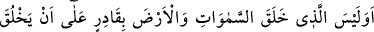
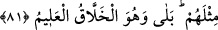

81. Gökleri ve yeri yaratan, onların benzerlerini yaratmaya kadir değil midir?
Evet! Elbette kadirdir. O, her şeyi hakkıyla bilen yaratıcıdır.
Burada hemze, inkar/reddetmek ve olumsuzluk içindir. Olumsuzu reddetmek ise
olumludur. İnkâr hemzesi görünüşte atıf vâvı üzerine dahil olsa da gerçekte Allah’ın
kudretini ispat ve takrir kasdıyla nefiy/olumsuzluk kelimesi (
) üzerine dahil olmuştur.
Onları (kemikleri) ilk olarak yaratan, yeşil ağaçtan insanlar için ateş çıkaran;
“Gökleri ve yeri yaratan” gökleri, yâni ulvî cisimleri ve onlarda bulunanları,
yeryüzünü, yâni süflî cisimleri ve onların üzerinde bulunanları hacimlerinin
büyüklüğüne ve durumlarının azametine rağmen bütün bunları yaratan “onların
benzerlerini yaratmaya” göklere ve yerlere nisbetle gayet basit ve küçük olan insanları
yaratıp daha önce oldukları gibi âhirette tekrar diriltmeye “kadir değil midir?” Elbette
aklın bedâheti gökleri ve yeri yaratmaya kadir olanın insanları yaratmaya daha muktedir
olduğuna hükmeder. Nitekim Allah Teâlâ şöyle buyuruyor: “Elbette göklerin ve yerin
yaratılması, insanların yaratılmasından daha büyük bir şeydir.” (el-Mü’min, 40/57)
Yahut Allah onların zât ve sıfatlarının asıllarında onların benzerlerini yaratmaya kadir
değil midir? demektir. Yeniden yaratılan da onların benzerleridir. Çünkü yeniden
yaratılan, bazı ârızî durumlarda farklılık gösterse de aslî cüzlere ve müşahhas sıfatlara
şâmil olması bakımından ilkinin misli/benzeridir. Çünkü “Cennet ehlinin vücudu kılsız,
yüzü sakalsızdır.”[181] Cehennemlik olan bir kimsenin azı dişi Uhud dağı kadardır.[182]
Daha başka buna benzer bazı farklılıklar vardır.
Şerefüddîn Tıybî der ki: “Burada “
” lafzı muhâtaplardan kinâyedir. “
(Senin gibisi cömert olur)” demek gibidir. Buna göre “onların benzerini” demek, onları
demektir.
et-Te’vîlâtü’n-Necmiyye’de der ki: “Yeniden yaratmak, ilk olarak yaratmak
mânâsındadır. İlk olarak yaratılışı ikrar ettiğinize göre nihâyette yeniden yaratılmanın
mümkün olması konusunda geriye hangi zorluk kalır? Sonra Allah Teâlâ şöyle
buyurmaktadır: Yeşil ağaçtan, merh ve afâr ağaçlarının dallarından ateş yaratmaya kadir
olan, çürümüş ve dağılmış kemiklerde hayat yaratmaya da kadirdir. Sonra daha fazla
açıklama sadedinde Allah Teâlâ şöyle buyuruyor: Her yönden eşit ve aynı oldukları için
bir şeyin benzerine kadir olan o şeyin kendisine de kadirdir. Allah Teâlâ nutfe ve
menîden insana hayat verdiği gibi, yine yumurtadan kuşu yarattığı gibi öldükten sonra da
nefisleri mahşerde arasat meydanında diriltecektir. Yine Allah Teâlâ küfür ehlinin
nefislerini hevâ ve tuğyân ile dirilttiği gibi iman ehlinin kalblerini de irfân/mârifet ile
diriltir.
Fakir (Bursevî) der ki: